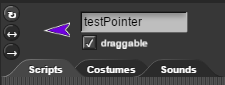

Lesson 1.4: Animation¶
Learning Objectives¶
Students will be able to…
Animate Snap! sprites using costume changes and movement.
Trigger action in other sprites using broadcasts.
Implement scripts for multiple sprites.
Materials/Preparation¶
Video Resource: https://youtu.be/3x5ZI-mKc44
Video Quiz: See Additional Curriculum Materials accessed from the TEALS Dashboard.
Changing Costumes Video Resource: https://youtu.be/kgqi7CQLgJU
Pacing Guide¶
Duration |
Description |
|---|---|
10 minutes |
Welcome, attendance, bell work, announcements |
10 minutes |
Lecture and introduce activity |
25 minutes |
Animation activity |
10 minutes |
Debrief and wrap-up |
Instructor’s Notes¶
Note: The Lesson 1.4 project has examples of all the concepts covered in this lesson.
Warm-up¶
Students should complete Do Now 1.4: Example Animation individually. Check to be sure students save a copy of the Example Animation in their personal Snap!accounts so they can refer to it later!
Lecture¶
Broadcasting¶
Note: The Lesson 1.4 project has examples of all the concepts covered in this lesson.
Introduce students to the
Costumestab and show them how to import costumes to a sprite.Point out that, while a sprite’s costumes can be anything, most often the different costumes of a single sprite will be somehow related.
Demonstrate how to use the
next costumeandswitch to costumeblocks to change the appearance of a sprite.Emphasize that costumes will cycle and that switching to the costume a sprite is already “wearing” is OK.
Combine costume switching with movement and other actions to show that blocks of different categories can be combined in the same script.
Introduce the
broadcastandwhen I receiveblocks and show how they can be used to coordinate action between sprites
Point out that all sprites “hear” a broadcast and any sprite with a corresponding
when I receiveblock will react.Discuss the difference between
broadcastandbroadcast and waitblocks and ask students to come up with ideas for when each would be useful.
It’s worthwhile to introduce the rotate buttons located at the top left of the Snap! interface. These buttons allow you to Snap your rotation, allowing you to lock rotation, allow free rotation, or allow only left/right rotation.

Adding more Sprites¶
Introduce students to adding more sprites to their script using the
add a new turtle spritebutton.When clicked, the students will notice a new sprite is created with a different color.
Have them select the new sprite, then click on
file>costumes> Import > Have them select Alonzo.Show them how they can now write a script for this second sprite that is only for that Sprite.
Activity¶
Students should complete the Sprites in Action lab individually.
Ensure that students create two different sprites for parts 1 and 2 so they do not get the costumes mixed up.
Students can submit the assignment using your turn-in procedures or you can check off the work as students complete it.
Debrief¶
Ask a student to show their solution to each part. Call on a different student (either a volunteer or via cold calling) for part 1 and part 2.
Note any places in which there may be multiple possible approaches. Ask for volunteers to describe differences in their code.
Accommodations/Differentiation¶
Students that finish quickly can be encouraged to add more detail to their animations, such as sounds,
sayblocks, and/or more costumes.Especially advanced students can be encouraged to create their own costumes for a new animation that does not use any built-in sprites.
With struggling students, re-emphasize the fact that each sprite can have different costumes and that changing costumes is very much like changing position by moving. Get students to be able to change costumes on a key press before moving on to the animation aspect.
Forum discussion¶
Lesson 1.4 Animation (TEALS Discourse account required)